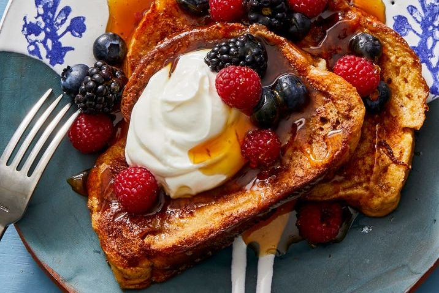

My French Toast Recipe
Why you should make it

Today you will be learning how to make French Toast. This is an easy quick recipe that you can use to make quality food that will serve two people (you can also double all the amounts and serve four people). This is a classic that many people love to eat. People love their sweet flavour and that you don't need to use fresh bread to make them.
Ingredients
- 2 eggs
- ½ cup of cream (half and half or heavy)
- 1 tbsp of sugar
- ½ a pinch of salt
- ½ tsp vanilla or orange blossom water
- Zest from ½ orange
- 4 or 5 slices of day-old bread - French/challah/brioche/panettone
- Maple syrup
- Fresh fruit/Fruit compote
- Whipped cream
Instructions
- Whisk together the first 6 ingredients
- Dip bread in the batter.
- Pan fry it on a lightly oiled non-stick skillet.
- Serve it with the maple syrup, whipped cream, and fresh fruit/the fruit compote.